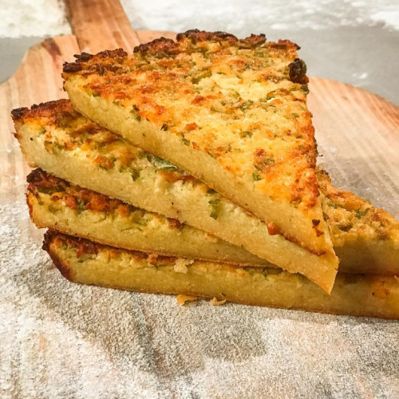
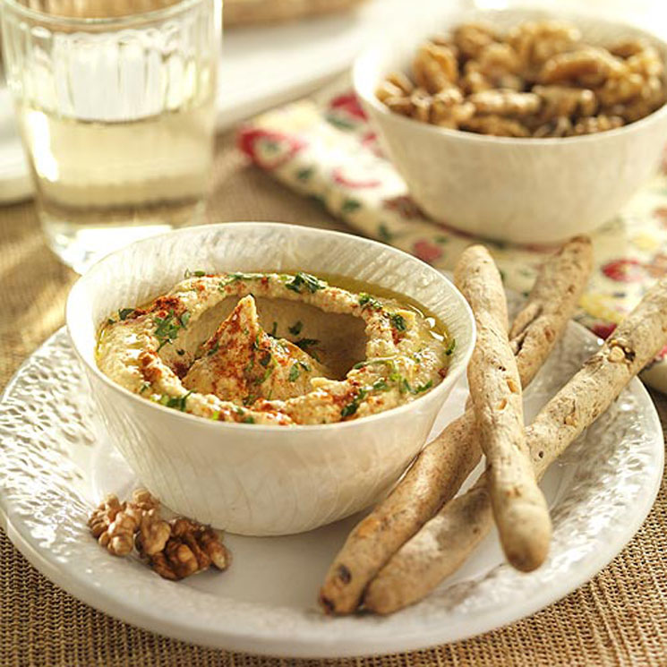
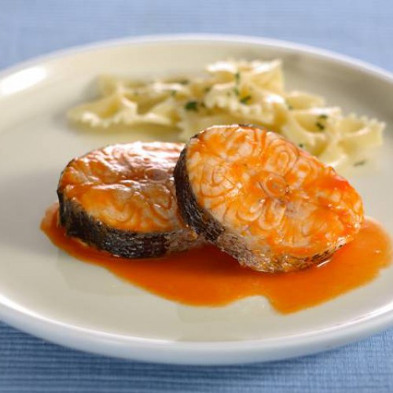
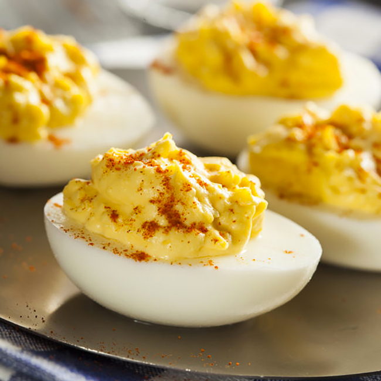
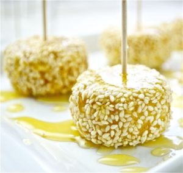
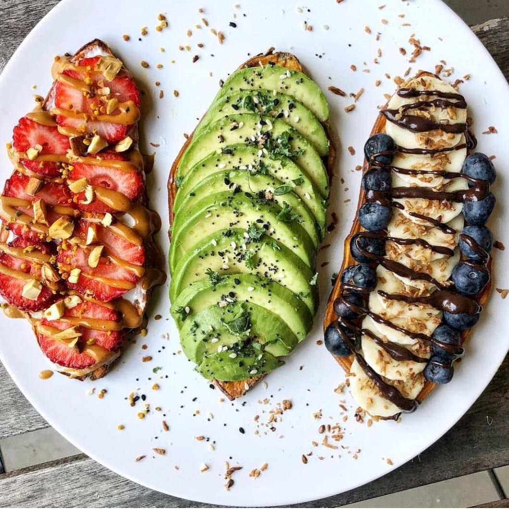

1. Faina
Ingledientes
Para 2 personas
Harina de garbanzos ...................................................................................... 100 g
Agua ..................................................................................................................... 300 ml
Sal ........................................................................................................................... 4 g
Aceite de oliva extra virgen ......................................................................... 40 ml
Ajo Granulado
Tomillo
Queso rallado
Como hacer Faina
Dificultad: Facil
Tiempo total .............. 35 m
Elaboracion ............ 10 m
Cocción ............ 15 m
Reposo ............ 10 m
Comenzar a preparar la masa, al menos, cuatro horas antes. Disponer la harina de garbanzos en un recipiente y empezar a añadir el agua muy poco a poco, removiendo con las varillas manuales a medida que se incorpora, para formar primero una pasta. La idea es evitar los grumos. Continuar añadiendo el agua y removiendo hasta tener un líquido muy fluido. Tapar con un paño o plástico film y dejar a temperatura ambiente, o en una zona fresca si hace mucho calor, entre cuatro y ocho horas. Remover cada hora o cada dos horas. Precalentar el horno a su máxima temperatura posible, con la sartén de hierro fundido o la cazuela o fuente que vayamos a usar. Debería tener un diámetro de unos 25 cm, y ser apta para esas temperaturas. Añadir la sal a la masa y volver a remover. Sacar con mucho cuidado y echar el aceite por toda su superficie. Verer con cuidado la masa encima -se mezclará con el aceite sin incorporarse de forma homogénea, es normal-. Agregar abundante pimienta negra recién molida, más sal y otros aderezos al gusto, como ajo molido u orégano. Hornear en el nivel más bajo del horno durante unos 20-25 minutos, hasta que el borde empiece a tostarse y esté dorada. Cambiar el horno a modo gratinar, subir al nivel superior y gratinar cuatro o cinco minutos más. Servir caliente.
2. Hummus
Ingledientes
Para 4 personas
Garbanzos cocidos .......................................................................................... 400 g
Aceite de oliva extra virgen ................................................................................................... 70 g
Semilla de sésamo tostado ................................................................................................................ 60 g
Agua ............................................................................................. 50 ml
Diente de ajo ............................................................................................. 1
Sal ................................................................................... 5 g
Jugo de limón ............................................................................................. 30 g
Comino molido ............................................................................................... 5 g
Yogurt natural ............................................................................................................ (opcional)
Como hacer Hummus
Dificultad: Facil
Tiempo total .............. 15 m
Elaboracion ............ 15 m
Lavamos bien los garbanzos para retirar el líquido en el que vienen sumergidos en la conserva. Escurrimos e introducimos en el vaso de un robot de cocina. Añadimos el diente de ajo pelado (si retiramos el germen queda más suave), el sésamo, el comino, la sal, el zumo de limón y el agua.
Trituramos hasta obtener una masa semi homogénea antes de incorporar el aceite de oliva virgen extra. Continuamos triturando unos minutos o hasta obtener una mezcla cremosa. Podemos aportar más cremosidad al hummus de garbanzos si añadimos un poco de yogur natural. Muchos restaurantes libaneses lo utilizan y queda estupendo, pero esto es completamente opcional.
La consistencia del hummus es algo muy personal, por eso recomendamos ajustar el punto de espesor añadiendo un poco más de agua y/o aceite hasta obtener el deseado. En el momento de servir rociamos con un chorrito de aceite de oliva virgen extra, semillas variadas y pimentón dulce. Otros toppings que podemos añadir son aceitunas o perejil picado. Al gusto.
4. Merluza en salsa roja
Ingledientes
Para 3-4 personas
Merluza en lomo o rodajas limpias ................................................................................................. 800 g
Cebolla blanca ................................................................................................... 1
Diante de ajo pequeño ..................................................................................................... 2
Laurel ............................................................................................... 1
Pulpa de pimiento choricero ............................................................................................................... 10 ml
Morron rojo asado ...................................................................................................... 180 g
Vino blanco ................................................................................................... 60 ml
Caldo de pescado o fumet o agua ........................................................................ 120 ml
Cucharadita de pimenton dulce o aji picante (a eleccion) ............................................................................................................ 1/2
Aceite de oliva extra virgen
Sal
Tomillo seco o perejil
Como hacer Merluza en salsa roja con pimientos rojos asados
Dificultad: Dificil
Tiempo total .............. 40 m
Elaboracion ............ 5 m
Cocción ............ 35 m
Comenzamos dejando la merluza preparada y atemperándose fuera de la nevera para cocinarla directamente cuando toque. En realidad podemos usar cualquier otro pescado blanco, merluza descongelada o pescadilla, lomos o rodajas... Lo ideal es disponer de piezas de buen grosor, cortadas, sin espinas y, a ser posible, sin piel. Salar y reservar.
Picar la cebolla y rallar los ajos. Calentar un fondo de aceite de oliva en una cazuela amplia y pochar ambos con un poco de sal. Cuando empiecen a coger color, añadir el pimiento choricero (es muy práctico tener congelado en porciones) o la carne de la ñora, y remover bien. Si no tenemos, echar ahora el pimentón cuidando que no se queme.
Incorproar el pimiento troceado o cortado en tiras, dar unas vueltas un par de minutos y regar con el vino. Cuando se evapore el alcohol, agregar el caldo, remover, bajar el fuego y dejar reducir unos 10 minutos. Retirar el laurel y triturar con la batidora. Añadir un poco más de pimentón o cayena si se desea. Se puede dejar una salsa más fina, procesándola más y pasándola por un chino, o con más sustancia, según nos guste. Ajustar de líquido con más caldo o agua si fuera necesario y añadir la merluza, secándola previamente con papel de cocina. Dejar cocer a fuego suave hasta que el pescado esté en su punto.
Otra opción es enharinar el pescado antes y pasarlo por la sartén, pero podemos ahorrarnos ese paso. Servir caliente con tomillo o perejil.
5. Huevos rellenos
Ingledientes
Para 12 Unidades
Huevos L ...................................................................................................... 2-3
Bonito del Norte en conserva en aceite de oliva ................................................................................................... 160 g
Morron en lata ................................................................................................ 150 g
Sal
Mayonesa
Como hacer Huevos rellenos
Dificultad: Facil
Tiempo total .............. 35 m
Elaboracion ............ 10 m
Cocción ............ 15 m
Reposo ............ 10 m
Cocemos los huevos y los pelamos una vez fríos. Los abrimos por la mitad y sacamos todas las yemas con cuidado de no romper las claras. En un cuenco aparte ponemos las yemas, reservando una, el bonito muy bien escurrido, el pimiento morrón troceado, tres cucharadas de mayonesa y una pizca de sal. Mezclamos muy bien todo con ayuda de un tenedor, a la vez que presionamos para que los ingredientes se deshagan un poco. Rellenamos con esta mezcla cada mitad de huevo. Cubrimos con un poco de mayonesa y adornamos con unas tiras de pimiento y yema rallada.
Conservamos tapados en la nevera hasta el momento justo de consumir. Quedan mucho más ricos si hacemos nosotros mismos la mayonesa.
6. Bonbones de queso de cabra y sesamo
Ingledientes
Para 40 unidades
Queso de cabra sin cortaza ................................................................................................ 300 g
Queso crema ..................................................................................................... 100 g
Miel ................................................................................................ 5 g
Semilla de sesamo ................................................................................................ 200 g
Azucar .................................................................................................... 75 g
Agua ............................................................................................................... 15 g
Como hacer Bonbones de queso de cabra adobados con sésamo
Dificultad: Facil
Tiempo total .............. 40 m
Elaboracion ............ 30 m
Cocción ............ 10 m
Reposo ............ 1 h
Ponemos las semillas de sésamo en una sartén y las espolvoreamos con el azúcar y el agua. Calentamos a fuego medio, removiendo a menudo para que no se quemen, hasta que el azúcar se haya disuelto y se haya convertido en caramelo. Extendemos el sésamo sobre una lámina de papel sulfurizado y dejamos enfriar. No pasa nasa si que pega, pues una vez frío le pasamos un rodillo por encima para separar las semillas. En un cuenco hondo chafamos el queso de cabra y lo mezclamos con el queso crema de forma manual (no uses batidora eléctrica o la mezcla se volverá demasiado blanda). Removemos bien para que no queden grumos. Añadimos la miel y mezclamos de nuevo hasta homogeneizar. Guardamos en la nevera durante una hora para que la pasta tome consistencia.
Tomamos pequeñas porciones de la masa y pasamos por el sésamo caramelizado. Boleamos para ayudar a recubrir bien con las semillas al tiempo que corregimos la forma para que nos queden perfectas. Guardamos en frío hasta el momento de consumir.
7. Tostados de boniato
Ingledientes
Para 1 persona
Boniato grande y ancho ................................................................................................ 300 g
Aceite de oliva extra virgen
Palta madura
Tomate
Queso crema de cabra
Hummus
Limón
Arándanos
Morron rojo
Hierbas frescas
Frutilla o alguna otra fruta fresca
Pimienta negra
Sal
Como hacer Tostados de boniato a la francesa
Dificultad: Facil
Tiempo total .............. 40 m
Elaboracion ............ 30 m
Cocción ............ 10 m
Precalentar el horno a 180º C y preparar una bandeja o fuente. Lavar y secar bien el boniato -o boniatos- y cepillar la piel o, directamente, pelarlos. Con un buen cuchillo, cortar rebanadas de unos 5-6 mm de grosor, procurando sacar porciones anchas.
Pintar con aceite de oliva y salpimentar muy ligeramente, por ambas caras. Hornear durante 10 minutos o hasta que empiecen a tostarse, dar la vuelta y continuar horneando hasta que estén al punto deseado, entre 10 y 20 minutos más. Podemos dejarlas un poco menos cocinadas de lo que nos gustaría para guardarlas en la nevera o congelarlas, y así terminar la cocción usando el tostador otro día. Se pueden preparar calientes o a temperatura ambiente.
Para preparar las coberturas, sacar la carne del aguacate y machacar con un tenedor añadiendo un chorrito de zumo de limón o lima, hierbas al gusto y salpimentar. También podemos usar sobras de guacamole y el hummus que más nos guste. Lavar y secar los tomates -podemos usar cualquier variedad que tenga buen sabor y estén crujientes-, pimientos y la fruta deseada.
Combinar una base de queso crema o cremoso de cabra con ralladura de limón, arándanos, kumquats u otras frutas de temporada, añadiendo un toque de pimienta. Coronar el aguacate cremoso con tomate, cebollino y escamas de sal; añadir a la base de hummus pimiento crudo con perejil o cilantro y un chorrito de aceite de oliva.